This function returns an output list of data and plots that
come from using the K-Means clustering algorithm on a time series data.
Usage
ts_feature_cluster(
.data,
.date_col,
.value_col,
...,
.features = c("frequency", "entropy", "acf_features"),
.scale = TRUE,
.prefix = "ts_",
.centers = 3
)Arguments
- .data
The data passed must be a
data.frame/tibbleonly.- .date_col
The date column.
- .value_col
The column that holds the value of the time series where you want the features and clustering performed on.
- ...
This is where you can place grouping variables that are passed off to
dplyr::group_by()- .features
This is a quoted string vector using c() of features that you would like to pass. You can pass any feature you make or those from the
tsfeaturespackage.- .scale
If TRUE, time series are scaled to mean 0 and sd 1 before features are computed
- .prefix
A prefix to prefix the feature columns. Default: "ts_"
- .centers
An integer of how many different centers you would like to generate. The default is 3.
Details
This function will return a list object output. The function itself
requires that a time series tibble/data.frame get passed to it, along with
the .date_col, the .value_col and a period of data. It uses the underlying
function timetk::tk_tsfeatures() and takes the output of that and performs
a clustering analysis using the K-Means algorithm.
The function has a parameter of .features which can take any of the features
listed in the tsfeatures package by Rob Hyndman. You can also create custom
functions in the .GlobalEnviron and it will take them as quoted arguments.
So you can make a function as follows
my_mean <- function(x) ret <- mean(x, na.rm = TRUE) return(ret)
You can then call this by using .features = c("my_mean").
The output of this function includes the following:
Data Section
ts_feature_tbl
user_item_matrix_tbl
mapped_tbl
scree_data_tbl
input_data_tbl (the original data)
Plots
static_plot
plotly_plot
See also
https://pkg.robjhyndman.com/tsfeatures/index.html
Other Clustering:
ts_feature_cluster_plot()
Examples
library(dplyr)
data_tbl <- ts_to_tbl(AirPassengers) %>%
mutate(group_id = rep(1:12, 12))
ts_feature_cluster(
.data = data_tbl,
.date_col = date_col,
.value_col = value,
group_id,
.features = c("acf_features","entropy"),
.scale = TRUE,
.prefix = "ts_",
.centers = 3
)
#> $data
#> $data$ts_feature_tbl
#> # A tibble: 12 × 8
#> group_id ts_x_acf1 ts_x_acf10 ts_diff1_acf1 ts_diff1_acf10 ts_diff2_acf1
#> <int> <dbl> <dbl> <dbl> <dbl> <dbl>
#> 1 1 0.741 1.55 -0.0995 0.474 -0.182
#> 2 2 0.730 1.50 -0.0155 0.654 -0.147
#> 3 3 0.766 1.62 -0.471 0.562 -0.620
#> 4 4 0.715 1.46 -0.253 0.457 -0.555
#> 5 5 0.730 1.48 -0.372 0.417 -0.649
#> 6 6 0.751 1.61 0.122 0.646 0.0506
#> 7 7 0.745 1.58 0.260 0.236 -0.303
#> 8 8 0.761 1.60 0.319 0.419 -0.319
#> 9 9 0.747 1.59 -0.235 0.191 -0.650
#> 10 10 0.732 1.50 -0.0371 0.269 -0.510
#> 11 11 0.746 1.54 -0.310 0.357 -0.556
#> 12 12 0.735 1.51 -0.360 0.294 -0.601
#> # ℹ 2 more variables: ts_seas_acf1 <dbl>, ts_entropy <dbl>
#>
#> $data$user_item_matrix_tbl
#> # A tibble: 12 × 8
#> group_id ts_x_acf1 ts_x_acf10 ts_diff1_acf1 ts_diff1_acf10 ts_diff2_acf1
#> <int> <dbl> <dbl> <dbl> <dbl> <dbl>
#> 1 1 0.741 1.55 -0.0995 0.474 -0.182
#> 2 2 0.730 1.50 -0.0155 0.654 -0.147
#> 3 3 0.766 1.62 -0.471 0.562 -0.620
#> 4 4 0.715 1.46 -0.253 0.457 -0.555
#> 5 5 0.730 1.48 -0.372 0.417 -0.649
#> 6 6 0.751 1.61 0.122 0.646 0.0506
#> 7 7 0.745 1.58 0.260 0.236 -0.303
#> 8 8 0.761 1.60 0.319 0.419 -0.319
#> 9 9 0.747 1.59 -0.235 0.191 -0.650
#> 10 10 0.732 1.50 -0.0371 0.269 -0.510
#> 11 11 0.746 1.54 -0.310 0.357 -0.556
#> 12 12 0.735 1.51 -0.360 0.294 -0.601
#> # ℹ 2 more variables: ts_seas_acf1 <dbl>, ts_entropy <dbl>
#>
#> $data$mapped_tbl
#> # A tibble: 3 × 3
#> centers k_means glance
#> <int> <list> <list>
#> 1 1 <kmeans> <tibble [1 × 4]>
#> 2 2 <kmeans> <tibble [1 × 4]>
#> 3 3 <kmeans> <tibble [1 × 4]>
#>
#> $data$scree_data_tbl
#> # A tibble: 3 × 2
#> centers tot.withinss
#> <int> <dbl>
#> 1 1 1.83
#> 2 2 0.736
#> 3 3 0.457
#>
#> $data$input_data_tbl
#> # A tibble: 144 × 4
#> index date_col value group_id
#> <yearmon> <date> <dbl> <int>
#> 1 Jan 1949 1949-01-01 112 1
#> 2 Feb 1949 1949-02-01 118 2
#> 3 Mar 1949 1949-03-01 132 3
#> 4 Apr 1949 1949-04-01 129 4
#> 5 May 1949 1949-05-01 121 5
#> 6 Jun 1949 1949-06-01 135 6
#> 7 Jul 1949 1949-07-01 148 7
#> 8 Aug 1949 1949-08-01 148 8
#> 9 Sep 1949 1949-09-01 136 9
#> 10 Oct 1949 1949-10-01 119 10
#> # ℹ 134 more rows
#>
#>
#> $plots
#> $plots$static_plot

#>
#> $plots$plotly_plot
#>
#>
#> attr(,"output_type")
#> [1] "ts_feature_cluster"